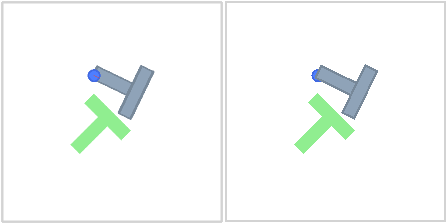
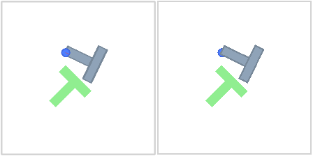
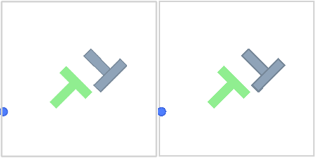
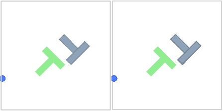

swm/PushT-v1 — cpu
Worst frame: seed 13, step 0; normalized MSE 0.000849184. Source left, ours right.

1,024 source frames per registration; default appearance, 224×224. Renderer-only evidence; full State/dynamics remain incomplete.
Worst frame: seed 13, step 0; normalized MSE 0.000849184. Source left, ours right.

Worst frame: seed 13, step 0; normalized MSE 0.000909120. Source left, ours right.

Worst frame: seed 34, step 11; normalized MSE 0.000855457. Source left, ours right.

Worst frame: seed 34, step 11; normalized MSE 0.000915394. Source left, ours right.
